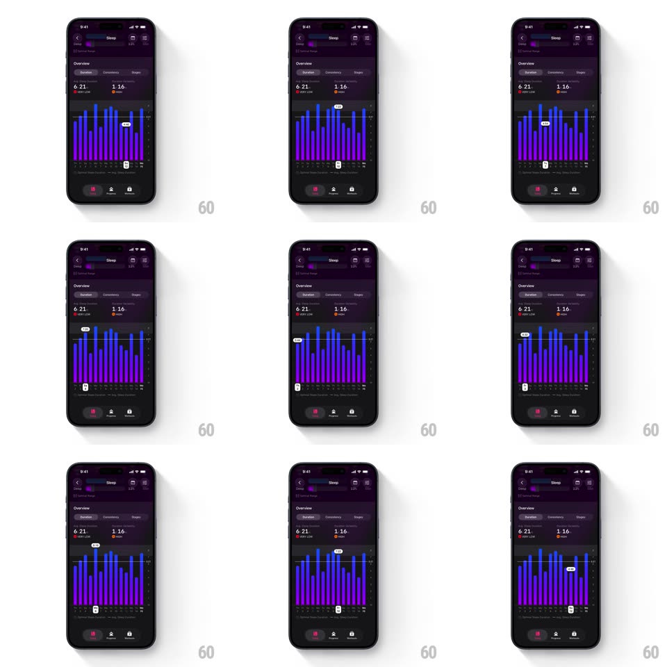

Media
Frame-by-frame

Rebuild this interaction 1:1: The Outsiders' sleep duration graph - scrubbing the purple bar chart snaps a tooltip pill above the active bar and a date capsule below the axis, both springing bar-to-bar as you drag.

Rebuild this interaction 1:1: The Outsiders' sleep duration graph - scrubbing the purple bar chart snaps a tooltip pill above the active bar and a date capsule below the axis, both springing bar-to-bar as you drag.
## Integration
Integration: stack-agnostic spec - springs given as stiffness/damping, timed motions as duration + curve; map every value to your framework and animation library of choice.
## Scene
Dark purple Sleep screen, Duration tab: stats "6:21 VERY LOW" and "1:16 LOW" with colored dots, a bar chart of indigo-purple vertical bars over day labels, and the bottom tab bar. Scrub state: the active bar brightens, a pill tooltip floats above it ("7:05"), and a small capsule under the axis shows the date.
## Motion spec
Pattern: dual-snap bar scrub, gesture-driven.
- Scrub: dragging moves the selection 1:1; crossing a bar's midpoint snaps the highlight to that bar (spring ~420/22, overshoot visible) with haptic.
- Tooltip: the value pill re-centers over the active bar with the same spring, its value crossfading (100ms) per change.
- Date capsule: the small capsule below the axis slides to stay under the active bar (spring, slightly lagged ~40ms behind the tooltip for a trailing feel).
- Highlight: the active bar brightens (120ms); neighbors stay at base opacity.
## Calibration
- Tooltip above, capsule below - both track the same bar at all times.
- Values are durations (h:mm), the capsule is the date.
## Reduced motion
Tap selects a bar; tooltip and capsule appear without snap (150ms).
## Don't miss
- The capsule's slight lag behind the tooltip is the springy signature - keep it.
- Scrubbing off the ends clamps to the first/last bar, never empty space.